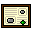

CSS Zen Garden: the page nobody was allowed to edit
The CSS Zen Garden was one web page that anybody could redesign and nobody could edit, and where its sentences landed on your screen depended on which design you had picked.
The rule for contributors was "You may modify the style sheet in any way you wish, but not the HTML." The Garden opened in May 2003 as a gallery with one exhibit: a single HTML document describing the project, a sidebar listing style sheets by name, and links that reloaded the same document wearing a different one.
Dave Shea, the designer who built the site, pitched it to contributors under the heading "Benefits". They would get recognition, inspiration and something to point at when making the case for CSS at work. The pitch ends with a forecast for the gallery itself: "One day this gallery will be a historical curiosity; that day is not today."
Wired, ESPN and the special cases
Making the case was the hard part of the job in 2003. The general view, in Shea's account of those years, was that CSS could only produce "boxy and boring design". The people who understood it were rarely designers, designers had largely not taken it up, and the few who knew better could not talk their clients and teams into the risk.
There were big sites to point at. Wired News relaunched late on 10 October 2002, Pacific time, with its pages made, as design director Douglas Bowman wrote the next day, to "rely entirely on CSS for every design, format, and presentation detail".
The examples after that were less tidy. ESPN.com redesigned its home page in February 2003, and Adrian Holovaty's report is titled "ESPN home page now has tableless layout (almost)": the tableless version was the lite home page, and the full one kept a few layout tables that Holovaty put down to MSN's navigation and the ad system. In April Cingular Wireless dropped tables from nearly every page, and Bowman, a Cingular customer, reviewed the result. It looked good, took "forever" to load, failed validation and crashed the reviewer's copy of Netscape 4.
Eric Meyer, looking back ten years later, put the mood in a parenthesis: "The Wired and ESPN designs were held to be special cases." A designer shown them in the spring of 2003 could fairly add that famous sites had resources an agency job did not, and that tables worked in every browser the client owned.
One rule, tried in February 2002
The Garden's rule was fifteen months old when Shea used it. In February 2002 Chris Casciano set out to restyle a site's index page every day for a month, under the name Daily CSS Fun and a single rule: the style could change from day to day and the HTML underneath could not. An update on 27 February admits to being "pretty bored of looking at this same document over and over again" and caps the month at 20 layouts instead of 28.
Shea's About page credits Daily CSS Fun, along with Jeffrey Zeldman's urging that people who wanted change stop describing what CSS could do and show it. What Shea added to Casciano's rule was other people, chosen by Shea. The Garden's page said the neat tricks so far had come from coders and that designers had yet to make their mark. It asked contributors not to send half-finished work and promised to host only the designs Shea picked, which in the end meant a numbered list that stops at 221, out of the thousands Shea counts as submitted from over 30 countries. Its instructions for taking part begin "Graphic artists only please."
Five designs by one gardener
Simon Willison, writing on the afternoon of 8 May, counted "5 radically different designs all using exactly the same markup". The gallery was then at mezzoblue.com/zengarden/, on Shea's site, and its first five style sheets, numbered 001 to 005, are each stamped "Added: May 7th, 2003". All five are signed by Dave Shea: 'Tranquille', 'Salmon Cream Cheese', 'Stormweather', 'arch4.20' and 'Blood Lust'.
The comments Shea left in those files read like notes from someone hanging a show alone. Tranquille, the default, "almost didn't make the cut". The kanji in its top left corner were put together from the characters for "beginning", "complete" and "skill", and the comment concedes that anyone who can read them will probably say they make no sense, and signs off: "It's a stretch."
Then the people Shea had been reading turned up. Bowman posted about the Garden on 8 May, in a piece that ends by saying it "makes me want to contribute", and Zeldman's Daily Report linked it the day after. Style sheet 006, 'Wicked Grove' by D. Keith Robinson, is the first with another name on it, and 010 is Dan Cederholm's. In the copy of the page kept on Eric Meyer's site, the newest design listed is 017, 'Golden Mean' by Douglas Bowman. The design director of the best-known special case had sent a style sheet to a stranger's gallery.
Who the stranger was came out in June, when Tim Bray had lunch with Shea and wrote it up. Bray had assumed the Garden's author was "some distinguished veteran of the web design wars". Across the table was a designer from Kamloops, a couple of years into living in Vancouver, who had never taken a course in any of the technology and stayed up late working on such things for their own sake. Shea's employer, a small design firm, did not know the Garden existed.
What the markup admitted
The one file nobody could edit carried a caveat from its author. Above the body tag, in the source of Meyer's copy:
<!--
This xhtml document is marked up to provide the designer with the maximum possible flexibility.
There are more classes and extraneous tags than needed, and in a real world situation, it's more
likely that it would be much leaner.
However, I think we can all agree that even given that, we're still better off than if this had been
built with tables.
-->The extraneous tags are easy to find. Every heading and every paragraph has its text wrapped in a span with no attributes. Paragraphs are numbered within each section, class="p1", class="p2" and so on. And after the last of the content come six empty elements:
<!-- These extra divs/spans may be used as catch-alls to add extra imagery. -->
<div id="extraDiv1"><span></span></div><div id="extraDiv2"><span></span></div><div id="extraDiv3"><span></span></div>
<div id="extraDiv4"><span></span></div><div id="extraDiv5"><span></span></div><div id="extraDiv6"><span></span></div>The padding was the price of the rule. A designer who wanted one more picture on the page than the content had elements for could not add an element, so Shea supplied spares in advance. The spans, by my reading, were there so that a style sheet could hide a heading's words and show a picture of them instead, set in a typeface the visitor didn't have. The Garden's FAQ now gives that habit as a reason the site can't call itself fully accessible.
The comment is the most disarming thing in the project. It concedes what a critic would say, in the place a critic would look, and keeps the one claim Shea needed.
The style sheets made admissions too. Beyond the rule about the HTML, the page's one real requirement was that the CSS validate, and it warned that getting valid CSS to display alike everywhere "becomes maddening when a fix for one leads to breakage in another". That left room for the Box Model Hack, which was valid by design.
Shea's Stormweather uses the hack's two voice-family lines to give Internet Explorer 5 one height and other browsers another, Cederholm's design uses them for a width, and Bowman's for a font size. In design 012, by Josh Ambrutis, a comment that begins "Stupid IE5, almost made it without a hack" sits above a shorter trick for the same browser.
The case the gallery made to designers
The Garden answered designers in pictures. Its designs lean hard on images, and Shea told .net magazine in 2013 that this was one of the most persistent criticisms: the site "showed what CSS could do with images, but didn't necessarily show what CSS could do on its own". Shea's defence was that CSS at the time could not do much beyond simple layout and text formatting. I'd add that the complaint mistakes the audience. A graphic artist deciding whether to learn CSS wanted to know whether the work done in Photoshop would survive the trip to a browser, and five style sheets full of background images said it would.
The fixed document made the comparison fair. Every design had the same words in the same order in the same tags, so whatever differed between two of them was the style sheet's doing, and nobody could say the handsome one had easier content.
And the style sheets could be read. Contributors kept the copyright in their graphics and released their CSS under a Creative Commons licence, in the page's words "so that others may learn from your work", and the sidebar linked straight to the current design's CSS file. View Source had always taught HTML this way, and the Garden did the same for layout.
What survives of the Garden
Shea let the Garden go quiet around 2008, on the view that the argument was over. Shea told .net that for a long time the site's reason for existing, convincing the world that web standards were a good thing, was also the reason a modern version wasn't necessary.
For its tenth anniversary the Garden reopened, as a reference for people learning the trade. Shea gave .net two reasons for the change of mind: Jenn Lukas's mock indignation that nothing was planned for the birthday, and the thought that people entering the industry were using the Garden as a reference and finding XHTML and CSS2 there. In May 2013 Shea rewrote the one HTML file as HTML5, put the project on GitHub and took submissions again. The current page has a new comment above its body tag, which starts "View source is a feature, not a bug." and goes on to the submission guidelines.
The extra divs survived the rewrite, with a note attached. The 2013 source tells designers to style with classes and not ids, to reach unclassed elements with :first-child and :nth-child, to hang extra imagery on ::before and ::after and to put several background images on one element. The spans around the text are gone. The six divs come last in the file under new names, extra1 to extra6, below a comment that calls them superfluous and says they "only remain for historical design compatibility. They might go away one day." Read together, the two source files are an inventory of what CSS lacked in 2003.
New designs are now turned away, politely. The FAQ's answer to whether the Garden is accepting submissions is "Probably not." The submissions page says that adding designs is no longer necessary, only fun.
The takeaway
The Zen Garden put its argument to designers in a form they could judge: finished designs, side by side on one document, with the style sheets open to read. What that showed was narrow and useful, that someone who drew for a living could get the drawing onto a web page without a table. The part I admire most is in the source. Shea padded the markup to make the trick possible and said so in a comment where any critic would find it, and the style sheets carried the browser hacks of the day in plain view.
The sentence about the historical curiosity is not on the page any more. The Benefits paragraph now describes the site as inspiration, a learning tool and a "gallery of future techniques". The Garden said early on that it expected to become a curiosity, and by Shea's account that is how it went: the additions ended once nobody needed convincing, and the site reopened only when there was something different for it to teach.
What I couldn't verify
- I could not open mezzoblue.com, Shea's own site, or the Wayback Machine, so I have not read Shea's launch post or any dated capture of the Garden from 2003. The early wording and markup, Shea's comment and the six extra divs included, come from the HTML source of an undated copy on Eric Meyer's site, which I can place only by its list of designs: the newest is number 17. A copy made for a talk in 2005 carries the same comment. I can't say the comment, or the sentence about a historical curiosity, was on the page on day one.
- That the five designs at the start were style sheets 001 to 005, all Shea's, is my inference from their numbering, the "Added: May 7th, 2003" stamp in each and Simon Willison counting five designs on 8 May. I found no list from 2003. The files are the ones served now, with selectors rewritten for the 2013 markup, so I am trusting that the header comments and the hack lines are original.
- Two dates differ between sources. The style sheets are stamped 7 May 2003 and Wikipedia gives that as the launch date, but the book The Zen of CSS Design is reported to say 8 May and I could not open it, so the essay names no launch day. Bowman's own post puts the Wired News relaunch at about 10pm Pacific time on 10 October 2002; Eric Meyer, Adrian Holovaty and the Web Standards Project date it 11 October.
- "Around 2008" for the end of active work is Wikipedia's April 2008, and I found nothing better; Shea's 2013 interview gives the reason but no date. The 7 May 2013 relaunch date is also Wikipedia's, which is why the essay says only May 2013.
- I found no designer saying in 2003 that the Garden changed their mind. The people the essay shows responding that May were advocates of CSS already, and that the argument was won is Shea's account, in 2013 and on the site now.
- The numbered list stops at 221 on the site's All Designs page, where the numbers are labels and not a count; Wikipedia says 218 designs are listed. The thousands of designs submitted from over 30 countries is Shea's own figure.
- Shea's About page, written twenty years on, names a third inspiration, a Wired contest in early 2003. Zeldman's Daily Report of 9 May 2003 names "the recent Hack Hotbot contest" instead, and I could not open the contest page to see its rules, so the essay leaves the contest out.
- Shea's background in 2003 (from Kamloops, self-taught, at a firm that did not know about the Garden) comes from one post by Tim Bray after one lunch.
- I found no one defending table layout in their own words in 2003. The sceptic's side of the argument is reconstructed from Shea's later account, Bowman's review of the Cingular site and one remark about special cases that Eric Meyer wrote ten years afterwards.
- What the spans around every heading and paragraph were for is my reading of the markup and of the FAQ's line about hidden text. Shea's comments explain the six extra divs but not the spans.
Sources and further reading
- CSS Zen Garden, Dave Shea, 2003, as rebuilt in 2013
- css Zen Garden: The Beauty in CSS Design (local), a copy of the Garden page and its HTML source on Eric Meyer's site, undated
- CSS Zen Garden: About, Dave Shea, 2023
- CSS Zen Garden: FAQ, Dave Shea
- CSS Zen Garden: Submit a Design, Dave Shea, 2023
- CSS Zen Garden: All Designs, Dave Shea
- Style sheet 001, 'Tranquille', Dave Shea, 2003
- Style sheet 003, 'Stormweather', Dave Shea, 2003
- Style sheet 012, 'TechnOhm', Josh Ambrutis, 2003
- CSS Zen Garden, project page, Dave Shea
- Finally, we're live, Douglas Bowman, 2002
- ESPN home page now has tableless layout (almost), Adrian Holovaty, 2003
- Wireless AND tableless, Douglas Bowman, 2003
- Daily CSS Fun, Chris Casciano, 2002
- The Daily Report, 9 to 13 May 2003, Jeffrey Zeldman, 2003
- The CSS Zen Garden, Simon Willison, 2003
- Zen inspiration, Douglas Bowman, 2003
- Zen Gardener, Tim Bray, 2003
- Resurrected Landmarks, Eric Meyer, 2013
- Dave Shea on the return of CSS Zen Garden, .net magazine, on Creative Bloq, 2013
- CSS Zen Garden, Wikipedia
Spot a mistake? Open an issue and it will be checked and corrected.
View source · Edit history